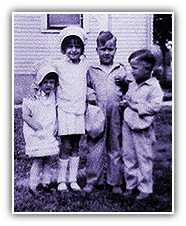
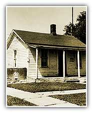

Introduction
Bob Dole has been called "a towering figure" and "the most enduring Republican leader of the twentieth century." But like many of our greatest leaders, Bob Dole had the humblest of beginnings. His story begins on the Great Plains, in a small town in America's breadbasket - a place where everybody knows each other by first name, where families go to church every Sunday and where the community doesn't think twice about rallying around a neighbor in need. It is from those roots deep in the Western Kansas soil that he still draws strength and that has shaped his vision for America's future.

Growing Up in Small-Town Kansas
Robert Joseph Dole was born on July 22, 1923 in a small plains town in western Kansas called Russell. He grew up in a small frame house with his mother and father, two sisters, Norma Jean and Gloria, and brother Kenny. Bob Dole's father, Doran, ran a cream-and-egg stand. He proudly wore his overalls to work everyday for 42 years. Dole's mother, Bina, sold sewing machines door-to-door. During the Depression, the Dole family pulled together to get by in the most difficult financial times. To make ends meet, the Doles moved into the basement of their home and rented out the rest of the house. Young Bob went to work as a soda jerk at Dawson's Drug Store in Russell. In those early years, when times were tough and money was short, Bob Dole learned the value of hard work, the worth of a dollar earned and the need to be financially responsible.

More opportunities. Smaller government. Stronger and safer families
Homepage | Register | Volunteers | Donations
About the Team | Dole Interactive | Newsroom | The Dole Agenda | On the Campaign Trail | Get Involved
Originally Paid for by Dole Kemp '96 Campaign Committee
Original Web Design by Presage Internet Campaigns
To Learn more about Bob Dole, Please Visit the Dole Institute
This Web Site is Presented for Educational Purposes by 4President.org